МИНИСТЕРСТВО ГАЗОВОЙ ПРОМЫШЛЕННОСТИ
ИНСТРУКЦИЯ
ПО РАСЧЕТУ И КОНТРОЛЮ ТОЧНОСТИ
СБОРНЫХ СТРОИТЕЛЬНЫХ КОНСТРУКЦИЙ
НАЗЕМНЫХ СООРУЖЕНИЙ
ВСН-2-22-71
Мингазпром
Москва 1972
В настоящей Инструкции приведены методы и порядок расчета и контроля точности сборных строительных конструкций компрессорных станций, газоперерабатывающих заводов, промыслов и других наземных сооружений.
Инструкция разработана для проектных и строительно-монтажных организаций с целью повысить качество проектирования и строительства
Работа составлена сотрудниками лаборатории технологии и организации строительства наземных сооружений ВНИИСТа канд.техн.наук Шапиро В.Д., инженерами Альтергот В.А. и Рачковским Ю.П. при участии сотрудников ЦНИИЭПжилища Эглита В.И. и Штейнберга Н.М.
|
Министерство газовой промышленности (Мингазпром) |
Ведомственные
строительные |
ВСН-2-22-71 |
|
Мингазпром |
||
|
Инструкция по расчету и контролю точности сборных строительных конструкций наземных сооружений |
Разработана |
1. РАСЧЕТ ТОЧНОСТИ СБОРНЫХ СТРОИТЕЛЬНЫХ КОНСТРУКЦИЙ ПРИ ПРОЕКТИРОВАНИИ
1.1. Настоящая Инструкция разработана в развитие СНиПа 1-А.4-62 [1] и III части СНиПов [2-5] применительно к наземным промышленным объектам газовой промышленности.
1.2. При проектировании зданий и сооружений необходимо учитывать требования строительных норм и правил (СНиП 1-А.4-62) и СНиПы [2-5] части II и III; обеспечение точности и взаимозаменяемости сборных строительных конструкций и элементов позволяет при их монтаже свести к минимуму подгоночные работы.
1.3. Для обеспечения взаимозаменяемости сборные строительные конструкции при проектировании должны быть рассчитаны на точность. Расчетом точности устанавливают:
требуемые характеристики точности;
проектные размеры зазоров, площадок опирания, уступов;
уровень качества продукции;
технологию контроля при изготовлении и монтаже конструкций.
|
Внесена Техническим управлением Мингазпрома |
Утверждена
Министерством газовой промышленности |
Срок введения 1 января 1972 г. Срок действия 1 января 1974 г. |
1.4. Основной характеристикой точности сборных строительных конструкций является величина допуска (D).
Допуск конструкции должен быть установлен при проектировании и указывать наибольшее значение величины производственной погрешности, при которой конструкция удовлетворяет требованиям взаимозаменяемости, или соответствие положения конструкции требованиям проекта.
Разность между наибольшим (Lмакс.) и наименьшим (Lмин.) предельными размерами (или предельными положениями) является допуском размера (или положения). Допуск размера (положения) может быть выражен через предельные допустимые отклонения:
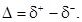
Положительное
допустимое отклонение ( 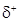 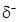
1.5. Величины допустимых производственных отклонений конструкций и их элементов от проектных размеров (и положений) (d) определяют расчетом в зависимости от:
проектных габаритных размеров элементов;
классов точности изготовления, разбивки и установки элементов в проектное положение;
типа узлов сопряжений.
Допустимые
отклонения могут быть симметричными относительно номинала (±15 мм),
несимметричными ( 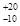
Например, при монтаже колонн допуск на смещение осей колонн в нижнем сечении относительно разбивочных осей выражается симметричными отклонениями ±5 мм; допуск на отклонение отметки торца анкерного болта от проектной имеет только положительное отклонение и равен +20 мм (СНиП III-В.3-62, табл.1).
Числовые обозначения допусков (предельных допустимых отклонений) записывают в рабочие чертежи конструкций.
Примеры обозначений:
980 ± 10; 150 + 20; 4360 .
Суммарные допуски сборных конструкций состоят из трех частей:
Dи - допуск на изготовление;
Dр - допуск на разбивку;
Dу - допуск на установку.
В связи с тем, что влияние каждой из частей на величину суммарной погрешности конструкции непостоянно и носит случайный характер, суммарный допуск (Dс) определяют по закону квадратического сложения элементарных допусков.
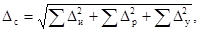
В общем случае величина суммарного допуска моет быть определена по формуле
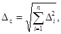
Di - проекции изготовленных, разбивочных и установочных (элементарных) допусков на ось замыкающего звена размерной цепи.
1.7. Изготовительный допуск (Dи) определяет отклонения габаритных размеров конструкций, элементов и изделий от их проектных величин при изготовлении и принимается по таблицам 5 и 6 приложения 1.
На величину изготовительного допуска (Dи) влияет ряд факторов; основные из них:
точность габаритных размеров формующего оборудования (форм, опалубки, кондукторов, копиров, стендов);
изменчивость габаритных размеров формующего оборудования в процессе его эксплуатации;
отклонения технологических процессов изготовления сборных элементов, изделий и конструкций от нормали;
качество исходных строительных материалов и полуфабрикатов,
серийность выпуска изделий;
точность установки закладных деталей, монтажных болтов, отверстий и других элементов, центрирующих и закрепляющих изделие при его монтаже;
точность нанесения монтажных осей, способы их обозначения на поверхностях готовых изделий;
точность измерительных приборов и инструментов, а также методы метрологических работ при контроле качества изделий;
вид технического контроля качества выполнения производственных процессов и операций (пооперационный, выборочный, систематический и другие).
1.8. Допуски на разбивку (Dр) и установку (Dу) сборных строительных конструкций определяют точность строительно-монтажных работ на площадке. Эти два допуска при суммировании квадратически образуют монтажный допуск (Dм).
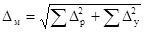
Величина монтажного допуска (Dм) зависит от:
точности геодезических и измерительных приборов, инструментов и приспособлений, применяемых при разбивке как сооружения в целом, так и его отдельных конструктивных элементов, блоков и секций;
точности производства измерений (линейных, угловых, высотных) при разбивке и установке элементов и конструкций в проектное положение;
методов разбивки и способов нанесения разбивочных монтажных осей (основных базовых и промежуточных, вертикальных и горизонтальных);
методов монтажа сборных конструкций;
схемы последовательности установки элементов;
способов временного закрепления, выверки и постоянного закрепления конструкций и их элементов;
методов контроля за установкой конструкций в проектное положение.
Существенное влияние на точность монтажа сборных строительных конструкций оказывают применяемые монтажные приспособления (кондукторы, фиксаторы, связи), квалификация исполнителей, воздействие внешних климатических условий строительной площадки, неравномерная осадка грунтов в основании сооружений в период монтажа, остаточные деформации и другие дефекты конструкций и их элементов, возникающие в период транспортирования готовых изделий с заводов-изготовителей и при их хранении на приобъектном складе.
1.9. Для определения величины монтажного допуска (Dм) при проектировании конструкций квадратически суммируют следующие допуски:
Dро - допуск осевых разбивочных pазмеpoв, который принимают по табл.7 приложения 2, зависит от расстояния между устанавливаемыми элементами;
Dру - допуск на отклонения отметок уровенных маяков и вертикальных отметок опорных площадок принимают по табл.8 приложения 2;
Dуо - допуск на несовмещение осей элемента с осями, разбитыми на монтажном горизонте, принимают по табл.9, приложения 2;
Dув - допуск на невертикальность установки элементов конструкций принимают по табл. приложения 2.
Кроме указанных допусков , в формулу (4) можно вводить другие производственные погрешности, если они являются определяющими для данной конструктивно-монтажной схемы, например:
Dрб - допуск на перенос базовых осей с одного монтажного горизонта на другой;
Dрэ - допуск на разбивку осей элемента, зависящий от точности определения и нанесения осей на элементе, не имеющем заводских маркировок.
Величины этих допусков определяют, исходя из конкретных конструктивных и производственных условий.
1.10. Конструкции зданий и оборудований схематически можно представить в виде ряда цепей сборных конструкций, установленных в определенной последовательности.
В зависимости от характера сопряжений сборных элементов различают контактные, монтажно-контактные и свободные цепи. Контактными называются цепи с непосредственным сопряжением монтируемых элементов между собой без зазоров. Примером контактной цепи может служить составная многоэтажная колонна с центрирующими прокладками (рис.1, а).
Монтажно-контактная цепь образуется в том случае, если вcтык между монтируемыми элементами устанавливают прокладки или фиксаторы, имеющие постоянную толщину и образующие гарантированный зазор (рис.1, б).
При контактной и монтажно-контактной цепях точность монтажных работ определяют главным образом изготовительными допусками.
Свободными называются цепи, в которых элементы установлены по осям или отметкам, разбиваемым или нивелируемым геодезическим способом независимо от смонтированных ранее элементов.
Рис. 1. Размерные цепи:
а) контактная; б) монтажно-контактная; в) свободная;
l1-l3 - линейные размеры элементов; L - общая длина;
С - размер прокладки или монтажного фиксатора;
С1, С2 - размеры компенсаторов (зазоров)
В свободные цепи между смонтированными элементами вводят звенья цепи (зазоры, швы, компенсаторы), которые компенсируют неточности при изготовлении и монтаже конструкций (рис.1, в). Предельные размеры зазора в этом случае зависят от сочетания изготовительных, разбивочных и установочных допусков.
Размерные цепи делятся на:
линейные, когда все векторы размеров лежат в одной плоскости и параллельны между собой;
плоскостные, когда все векторы размеров лежат в одной плоскости, но могут быть не параллельны один другому и расположены под равными углами к выбранному направлению;
пространственные, когда векторы размеров не лежат в одной плоскости и не параллельны между coбой.
Для удобства расчетов пространственные и плоскостные размерные цепи рекомендуется приводить к линейным, выбирая в качестве основного направления одну из координатных осей. Суммарный допуск (Dс) в направлении какой-нибудь координатной оси равен корню квадратному из суммы проекций на эту ось квадратов элементарных допусков (Di), входящих в расчетный участок цепи, например, на ось х:
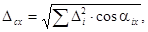
где Dсx - суммарный допуск в направлении оси х;
Di - допуск изготовления и монтажа, входящий в расчетный участок;
aix - угол между направлением погрешности и направлением оси х.
Проекции элементарных допусков (Di, сos aix) суммируют по длине расчетного участка размерной цепи, начиная с базовой оси участка и кончая замыкающим звеном.
Началом участка размерной цепи могут быть как оси и отметки, так и установочные риски, грани и плоскости элементов. Замыкающим звеном чаще всего являются площадки опирания, зазоры между сопрягаемыми элементами или оси.
1.11. Расчетом точности конструкций при проектировании определяют следующие основные допуски:
Dсз - допуск зазора, а также размеры пролета между двумя соседними элементами (колоннами, фермами);
Dсп - допуск площадки опирания, глубины опирания горизонтального элемента на вертикальные, а также сопряжения элементов внахлест;
Dсу - допуск уступа - разность двух номинально одинаковых размеров в одном узле сопряжения;
Dсг - допуск общего размера конструкции, блока, секции или сооружения в целом.
Расчетные величины основных допусков конструкций учитывают при назначении предельных проектных размеров зазоров площадок опирания и габаритных размеров конструкций с соблюдением зависимостей, приведенных в формулах (6-9).
Первый случай (по рис. 2)
Рис. 2. Предельно допустимые размеры зазора
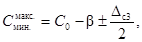
где - предельно допустимые размеры зазора;
С0 - проектный размер зазора;
b - поправка на несимметричность отклонений;
Dcз - допуск зазора.
Второй случай (по рис. 3)
Рис. 3. Предельно допустимые размеры площадки опирания
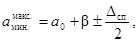
где 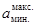
a0 - проектный размер площадки;
Dcп - допуск площадки.
Третий случай (по рис. 4)
Рис. 4. Предельно допустимые размеры уступа
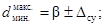
где 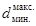
Dcу - допуск уступа.
Четвертый случай (по рис. 5)
Рис. 5. Предельно допустимые размеры конструкции (а) и всего сооружения (б)
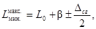
где 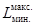
L0 - проектный размер;
Dсг - допуск размера.
1.12. Расчет точности сборных строительных конструкций при проектировании должен вестись в приведенной ниже последовательности:
1) на основе анализа конструктивно-монтажных схем здания или сооружения определяют элементы (или цепи элементов), точность которых необходимо регламентировать в целях обеспечения взаимозаменяемости;
2) из общих цепей элементов выделяют участки накопления производственных погрешностей (расчетные участки размерных цепей), а также конструктивные компенсаторы (зазор, площадки опирания), которые поглощают элементарные погрешности, накапливаемые на данном участке;
3) строят схемы расчетного участка размерной цепи с обозначением элементарных допусков;
4) в соответствии с принятой в проекте технологией изготовления и монтажа сборных строительных конструкций устанавливают классы точности производственных процессов;
5) записывают частный вид формулы (3) по таблицам 5-8 приложений 2 и 3 в зависимости от принятых классов точности, производственных процессов или на основе специфических требований производства, не учтенных СНиПом, определяют величины элементарных допусков (Di) и вычисляют суммарный допуск (Dc);
6) определяют Предельные размеры (положение) конструкций путем подстановки рассчитанных величин суммарных (конструкционных) допусков (Dc) в формулы (6-9).
Рассчитанные предельные размеры (положение) сборных строительных конструкций принимают за проектные в том случае, если они отвечают следующим требованиям:
предельные размеры площадок опирания должны обеспечивать предусмотренную расчетом прочность и устойчивость сооружений и их элементов;
размеры зазоров между элементами должны обеспечивать возможность беспрепятственного заполнения швов материалов при замоноличивании стыков;
предельные размеры и положения конструкций, их форма и состояние поверхности должны удовлетворять эстетическим требованиям, предъявляемым к данному зданию или сооружению.
1.13. Назначая при проектировании класс точности изготовления и монтажа сборных строительных конструкций, необходимо стремиться к тому, чтобы выбранная точность производственных процессов была экономически оптимальной.
Известно, что повышение точности удорожает производство, так как требует более точного формующего оборудования для заводов-изготовителей, сложной дорогостоящей оснастки, а также привлечения рабочих высокой квалификации. Поэтому при определении классов точности производственных процессов строительства необходимо принимать из возможных классов точности более низкий (например, если по расчету получается, что условиям взаимозаменяемости конструкций удовлетворяют 9-й и 10-й классы точности изготовления, то следует принять 10-й класс точности изготовления, имеющий меньшую себестоимость).
Экономически целесообразно назначить одинаковый класс точности для всех конструкций, входящих в состав размерной цепи элементов, и в виде исключения - более высокий класс для наиболее ответственных и сложных конструкций, узлов и сопряжений.
В приложении 3 приведены примеры расчета конструкций на точность.
2. ТЕХНОЛОГИЧЕСКОЕ ОБЕСПЕЧЕНИЕ ДОПУСКОВ И КОНТРОЛЬ ТОЧНОСТИ СТРОИТЕЛЬСТВА
ГЕОДЕЗИЧЕСКИЕ РАБОТЫ НА СТРОИТЕЛЬНОЙ ПЛОЩАДКЕ
2.1. Одним из главных условий достижения высокой точности строительства является своевременное и качественное проведение геодезических работ на строительной площадке, инструментальная привязка и разбивка зданий и сооружений, а также систематический геодезический контроль за точностью монтажа сборных строительных конструкций.
2.2. Привязку к местности проектов зданий и сооружений осуществляют от опорных точек геодезической сети, расположенной на территории строительной площадки. Плановые и высотные отметки опорных точек строительной геодезической сети должны быть привязаны к общегосударственной триангуляционной сети и иметь абсолютные отметки.
На каждой строительной площадке должно быть не менее трех реперов, расположенных равномерно и по возможности так, чтобы отметку репера можно было передать на сооружение с одной точки.
В отдельных случаях для закрепления на местности опорных точек могут быть использованы временные реперы, которые закладывают в виде закопанных в землю деревянных антисептированных бревен диаметром 12-15 см, отрезков металлических труб, рельсов и другого профильного металла. Глубина закладки репера должна быть не менее 1,8-2 м.
2.4. Геодезическая разбивка осей зданий и сооружений представляет собой комплекс измерений, выполненных при помощи геодезических инструментов, стальной рулетки и стальной проволоки на разбивочных горизонтах: опорном (на местности), нулевом (на подготовленном основании), исходном (на первом перекрытии) и монтажном (на последующих перекрытиях).
Независимо от типа разбивочного горизонта оси здания и сооружения могут быть наружными и внутренними, при этом наружные оси (продольные и поперечные), как правило, бывают основными (базовые или контрольные), а внутренние - рядовыми (рисунки 6 и 7 а, б, в).
Перед установкой конструкций в проектное положение осуществляют инструментальную разбивку путем перенесения в натуру внешнего контура зданий и сооружений с закреплением на местности основных разбивочных осей.
Разбивку осей зданий и сооружений необходимо выполнять с точностью, регламентированной настоящей Инструкцией (табл.7 приложения 2) и характеризуемой допустимой относительной ошибкой взаимного положения осей и контурных точек сооружения.
Когда разбивка окончена, составляют акт с приложением исполнительной схемы; в приложении указаны проектные и замеренные расстояния между разбивочными осями.
2.5. Разбивочные оси здания закрепляют на обноске, которую устраивают на расстоянии 3-4 м по контуру здания. Высоту столбов обноски в зависимости от характера строящегося объекта рекомендуется принимать равной 0,5-1,5 м. С внешней стороны столбов прибивают обрезные доски толщиной 40-50 мм. В качестве стоек обноски могут быть использованы металлические стержни и трубы, на которых при помощи хомутов и струбцин закрепляют доски.
Рис. 6. Схема разбивки осей зданий и сооружений
Положение разбивочных осей на обноске закрепляют гвоздями, пропилами или краской, после чего промерами стальной рулетки намечают и закрепляют вспомогательные оси. Под каждой отметкой, фиксирующей положение разбивочной оси, на вертикальной грани досок прочерчивают масляной краской линии и надписывают оси.
Рис. 7. Типы разбивочных рисок:
а - основные риски; б - рядовые наружные риски; в - рядовые внутренние риски
2.6. После того, как работы по рытью котлована и установке фундаментов окончены, обноска может быть разобрана. Основные разбивочные оси на период строительства закрепляют створными знаками, которые устраивают в виде деревянных столбов или металлических штырей. Необходимо принимать меры, чтобы створные знаки не были уничтожены или зарыты в процессе строительства.
2.7. При перенесении в натуру высотных проектных отметок пользуются относительными нулевыми отметками. Аналогичная отметка поверхности пола первого этажа здания принимается за нулевую. От нулевой отметки переносят отметки частей здания по высоте.
Разбивочные оси с нулевой на более высокие отметки переносят при помощи теодолита, а высотные отметки при помощи нивелира с рейкой или стальной рулеткой.
2.8. Классы точности разбивки должны быть учтены в проекте, а способы достижения необходимой точности - в руководствах по проведению геодезических работ на строительной площадке (см. табл. 7 приложения 2).
2.9. Габаритные размеры котлованов под фундаменты сооружений рекомендуется отмечать на обноске. Перенесение размеров котлована в натуру осуществляют от натянутой по оси проволоки при помощи отвесов, бровку котлована отмечают колышками. Высотные отметки на дно котлованов необходимо переносить с двух реперов. В процессе выполнения земляных работ глубину котлована проверяют визирами.
2.10. Зачистку дна котлована выполняют бульдозером или вручную. Для получения проектной отметки на дне котлована разбивают сетку квадратов со сторонами 10-20 м, а в углы вбивают колышки. Верхний срез колышков располагают на проектной отметке. Отклонение отметок дна котлована под блоки сборных железобетонных фундаментов от проектных допускается не более 5 см.
При рытье котлованов под отдельно стоящие фундаменты разница отметок дна двух соседних котлованов не должна превышать 10 см (СНиП III-Б.1-62). После окончания земляных работ осуществляют нивелирование дна котлована.
По материалам нивелирования котлованов составляют исполнительную схему земляных работ.
2.11. Разбивку и контроль точности установки фундаментов в плане выполняют по нанесенным на обноске разбивочным осям при помощи стальной проволоки и отвесов. В котлованы глубиной более 2 м передачу осей осуществляют теодолитом. Разбивочные оси и места установки фундаментных блоков на дне котлована закрепляют колышками.
С особой точностью должны быть установлены фундаменты, имеющие анкерные болты, так как это определяет точность установки колонн каркаса. Смещение анкерных болтов в плане не должно превышать ± 10 мм. Отклонение отметки верхнего торца анкерного болта + 20 мм, отклонение длины нарезки + 30 мм (СНиП III-В.3-62, табл. 1). Необходимые измерения выполняют теодолитом и нивелиром с рейкой или металлической рулеткой.
2.12. Разбивку колонн каркаса осуществляют теодолитом или от проволоки, вытянутой параллельно разбивочным осям. Расстояние между осями колонн измеряют металлической рулеткой. Допустимое смещение осей колонн в нижнем сечении относительно разбивочных осей ± 5 мм (СНиП III-А.3-62, табл.1).
2.13. До начала монтажа колонн для выравнивания заниженных опорных поверхностей фундаментов осуществляют подливку бетона, а завышенные поверхности срубают.
2.14. Вертикальность установки колонн проверяют теодолитом или отвесами, отвес-рейками, маятниковым измерителем с уровнем или фотоэлектрическим уровнем.
2.15. Если обнаружены смещения относительно разбивочных осей, металлические колонны передвигают по плоскости фундамента при помощи домкратов. Железобетонные колонны, установленные в фундаменты стаканного типа, перемещают путем ослабления клиньев с одной стороны колонны и забивания клиньев с другой. Колонны, установленные в кондукторы, перемещают при помощи болтов до тех пор, пока они не будут занимать проектное положение.
Передвигать колонну следует и в том случае, если из-за неточности изготовления ферм покрытия оголовки колонн при монтаже отклонились.
При отклонении верха металлических колонн от проектного положения выверку производят путем подбивки металлических клиньев под опорную плиту колонны, при этом анкерные болты со стороны клиньев должны быть ослаблены. Устанавливать колонны в проектное положение можно посредством натяжения расчалок, а также подтягиванием анкерных гаек с одной стороны и ослаблением с другой.
2.16. После установки и окончательного закрепления несущих конструкций каркаса подкрановые балки выверяют как в плане, так и по высоте. Рекомендуется начинать выверку с разбивки осей подкранового пути на земле в концах пролета. При двух положениях круга теодолита (слева и справа) разбитые на земле оси переносят на крайние подкрановые балки. После этого на каждой промежуточной опоре проверяют положение оси подкрановой балки относительно коллимационной плоскости теодолита или натянутой проволочной оси. При обнаружении отклонений, превышающих допустимые, балки смещают в ту или другую сторону до совпадения их осей с проектными.
Для выверки высотных отметок на одну из балок переносят высотную отметку с нулевой точки. Нивелирование подкрановых балок осуществляют нивелиром и двухсторонними рейками облегченного типа длиной 1-1,5 м. Рекомендуется помещать нивелир в середине пролета подкранового пути на 0,5-1,0 м выше уровня подкранового рельса.
Перемещение балок по высоте и установку их в проектное положение выполняют при помощи металлических подкладок. Параллельность и заданное проектом расстояние между подкрановыми путями проверяют при помощи щупов, штангенциркулей и других шкальных инструментов.
2.17. Выверка балок и ферм покрытия заключается в проверке правильности их установки в плане и по высоте. При выверке ферм и балок покрытия необходимо проверить вертикальность плоскости ферм и прямолинейность поясов для каждой установленной фермы. Прямолинейность поясов проверяют натяжением стальных проволок или шнура между опорными узлами ферм, а вертикальность - теодолитом.
ГЕОДЕЗИЧЕСКИЕ РАБОТЫ ПРИ СТРОИТЕЛЬСТВЕ КАРКАСНЫХ ЗДАНИЙ И СООРУЖЕНИЙ
2.18. После монтажа элементов нулевого цикла на исходный горизонт при помощи геодезического инструмента выносятся четыре риски, определяющие начало базовых и контрольных осей (рис. 8). Остальные четыре риски основных осей фиксируют при помощи стальной рулетки. Далее все восемь рисок переносят на цоколь здания и в процессе его возведения передают последовательно на монтажные горизонты (рис. 9).
После того как основные риски нанесены на исходном горизонте, осуществляют детальную разбивку рядовых рисок по наружным и внутренним осям здания (рис. 10). Положение рисок, расположенных поперек осей здания, определяют при помощи стальной рулетки, а риски, расположенные вдоль стальной проволоки, ориентируют относительно основных рисок.
Рекомендации для определения погрешностей разбивки рисок 20-метровой металлической рулеткой даны в формуле 10 и в табл. 1.
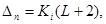
где Ki - коэффициент точности разбивки;
L - длина расчетного участка;
Dn - допуск разбивки.
Рис. 8. Схема вынесения рисок на исходный горизонт
2.19. Основные риски разбивают при помощи геодезического инструмента путем передачи на монтажные горизонты всех восьми основных рисок исходного горизонта, вынесенных на цоколь здания.
Разбивка рядовых рисок аналогична принятой на исходном горизонте. Передачу базовых и контрольных рисок с цоколя здания на монтажные горизонты можно осуществлять двумя способами:
способом наклонного проектирования при помощи теодолита;
способом оптической вертикали при помощи приборов типа ОЦП-2, зенит ОЦП, ПOBП, PZL (Цейс) и т.п.
Рекомендации для определения погрешности передачи основных разбивочных рисок с исходного на монтажные горизонты даны в табл. 2.
2.20. Передача высотных отметок на разбивочные горизонты при возведении зданий из полносборных конструкций (за исключением нулевого) нецелесообразна, так как точность геодезических работ может оказаться ниже точности изготовления изделий, а подрубка колонн по длине практически неосуществима. Поэтому единственным критерием точности здания по высоте является разность высотных отметок (в основном соседних стволов колонн) на рассматриваемом горизонте. Допуск нивелирования в пределах одной станции (Dру) принимается равным 4 мм.
Рис. 9. Схема переноса рисок на монтажные горизонты
Рис. 10. Схема разбивки рядовых рисок:
а - стальной рулеткой; б - проволокой
Таблица 1
Точность разбивки рисок 20-метровой стальной рулеткой с применением компаратора
|
Коэффициент точности измерения Ki |
Условия обеспечения класса точности |
Область применения |
|||||
|
способ установки рулетки |
способ натяжения рулетки |
способ измерения температуры |
место проведения измерений |
способ нанесения рисок |
|||
|
1-р |
0,12 |
В створ проволоки |
Динамометром |
Термометром-пращем |
На плоскости перекрытия |
Насечка на металлической пластине |
Разбивка рисок на исходном горизонте |
|
2-р |
0,20 |
В створ по теодолиту |
Динамометром |
Термометром-пращем |
На плоскости перекрытия |
Прочерчивание карандашом по поверхности бетона |
Разбивка рисок на монтажном горизонте |
|
3-р |
0,27 |
В створ на глаз |
Вручную без динамометра |
По данным гидрометеоцентра |
По поверхности земли |
Закрепление крайних делений рулетки на земле металлическими шпильками |
Разбивка рисок на местности |
Таблица 2
Точность передачи основных разбивочных рисок с исходного на монтажные горизонты
|
Расчетная формула |
Значения коэффициента Ki |
Условия обеспечения класса точности |
Рекомендуемая область применения |
|
|
1-р |
Dзп = 0,02 (Н + 100) |
- |
Зенит - прибором при четырех положениях зрительной трубы |
Для зданий и сооружений высотой до 100 м |
|
2-р |
0,06 |
Теодолитом с накладным уровнем при двух положениях вертикального круга |
Для зданий и сооружений высотой до 50 м |
|
|
3-р |
Dт = Ki (Н + 1) |
0,17 |
Теодолитом без накладного уровня при двух положениях вертикального круга |
То же |
|
4-р |
0,45 |
То же |
Для зданий и сооружений высотой до 25 м |
Примечание. В таблице приняты следующие буквенные обозначения:
Dзп - допуск точности передачи рисок зенит-прибором;
Dт - допуск точности передачи рисок теодолитом;
H - высота сооружения.
2.21. За начало накопления погрешностей на исходном и монтажных горизонтах принимается точка пересечения двух базовых рисок на исходном горизонте, вынесенных с опорного горизонта геодезическим инструментом. При расчете погрешности замыкающего звена на монтажных горизонтах допуск на длину здания определяют допуском на длину между основными рисками (базовой и контрольной), вынесенными на горизонт геодезическим инструментом, а не допуском, полученным при детальной разбивке рядовых рисок при помощи стальной рулетки.
Это условие необходимо соблюдать при установке колонн, расположенных на базовых осях по рискам, вынесенным геодезическим инструментом.
ОПРЕДЕЛЕНИЕ ФАКТИЧЕСКОЙ ТОЧНОСТИ ПРОИЗВОДСТВЕННЫХ СТРОИТЕЛЬНЫХ ПРОЦЕССОВ ПРИ ИЗГОТОВЛЕНИИ И МОНТАЖЕ СБОРНЫХ КОНСТРУКЦИЙ
2.22. На практике качественные характеристики отдельных элементов не всегда соответствуют нормативным, что приводит к дополнительным операциям, связанным с подгонкой конструкций при сопряжениях, точность которых рассчитана при проектировании.
Подгоночные операции в основном вызваны недостаточной точностью технологических процессов изготовления и монтажа конструктивных элементов здания.
При проектировании конструкций учесть специфические условия каждой строительной площадки довольно трудно, поэтому целесообразно выполнять проверочный расчет точности конструкций на основании фактических данных, характеризующих конкретные производственные условия строительства.
2.23. Проверочный расчет точности сборных строительных конструкций выполняют на основе производственных допусков, численные значения которых устанавливают статистическим контролем действительной точности технологических процессов производства. Такой метод определения допусков называют технологическим.
Сущность проверочного расчета заключается в том, что по величине суммарного конструкционного допуска, рассчитанного при проектировании конструкций, устанавливают производственные допуски изготовления и монтажа, увязываемые с конкретными технологическими особенностями производственной базы и допустимой точностью монтажа. Проведение проверочного расчета точности на строительной площадке позволяет активно воздействовать на степень точности сборных строительных конструкций путем введения соответствующих корректив в технический процесс монтажа.
Величину производственных отклонений (di) конструкций вычисляют по формуле
di = xi - l0, (11)
где xi - действительный размер (или положение) конструкций, который определен в результате контрольных замеров;
l0 - проектный размер (или положение).
Производственные отклонения (di) заносят в контрольные ведомости замеров и обязательно проставляют знак отклонения. На основании данных ведомости замеров составляют статистическую таблицу, которая служит для систематизации и облегчения расчетов (табл. 3).
Таблица 3
Статистическая таблица замеров
|
di |
nidi |
nidi2 |
ni(di + 1)2 |
|
|
1 |
2 |
3 |
4 |
5 |
|
2 |
3 |
6 |
18 |
32 |
|
1 |
4 |
4 |
16 |
25 |
|
... |
... |
... |
... |
... |
|
4 |
-1 |
-4 |
4 |
- |
|
3 |
-2 |
-6 |
12 |
3 |
Таблицу заполняют следующим образом:
в графу 1 проставляют значения, равные по величине и знаку отклонений, встретившихся при замерах (ni), или величины производственных отклонений;
в графу 2 проставляют величины отклонений действительных размеров (xi) от проектных (l0), т.е. (xi - l0) = di;
графа 3 является произведением графы 1 на графу 2;
графа 4 является произведением графы 1 на квадрат значения графы 2;
графа 5 является произведением значений графы 1 на квадрат значений графы 2, увеличенным на единицу в каждой строчке.
Правильность произведенных арифметических действий проверяют расчетом тождества
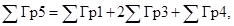
где 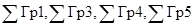
2.25. Используя данные статистической таблицы, рассчитывают среднее квадратическое отклонение
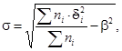
где
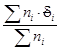
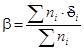
Если при расчете систематической ошибки (b) окажется, что ее величина меньше единицы, то при определении среднего квадратического отклонения (s) следует принимать b = 0.
2.26. Величина
производственного допуска ( 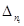
2.27. При вычислении действительной точности монтажа конструкции известную трудность представляет определение величины погрешности разбивочных работ. С точностью, достаточной для практических расчетов, следует принимать величину погрешности разбивки равной 30-35% от погрешности монтажа.
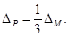
2.28. Суммарный производственный допуск (Dnc) определяют в соответствии с рекомендациями по расчету размерных цепей (п.п. 1.6-1.12) и по формуле (3), подставляя числовые значения элементарных допусков (Dni), которые определяют на основании статистического анализа действительной точности изготовления и монтажа конструкций на конкретной строительной площадке.
2.29. Рассчитанные величины суммарных производственных допусков (Dnc) сопоставляют с величинами конструкционных допусков (Dc), рассчитанных при проектировании конструкций.
При сопоставлении величин (Dnc) и (Dc) возможны следующие случаи.
Первый случай Dnc = Dc - равенство производственных и конструкционных допусков указывает на то, что производственные процессы изготовления и монтажа конструкций соответствуют проектным, а произведенные при проектировании конструкций расчеты точности соответствуют действительной точности технологических процессов производства; несоответствие между Dnc и Dc допускается 8-10%.
Второй случай Dnc > Dc - это несоответствие указывает на то, что не все величины производственных допусков отвечают установленным проектом требованиям к качеству конструкций и взаимозаменяемости их элементов.
Для выявления погрешностей производственного процесса, точность которого ниже проектной, необходимо сопоставить величины элементарных производственных допусков (Dni) с величинами элементарных допусков (Di), численные значения которых при расчете конструкционных допусков принимают по таблицам СНиПа 1-А.4-62 и по таблицам настоящей Инструкции (табл. 5-10 приложений 1 и 2).
Если при сопоставлении величин элементарных допусков Dni и Di окажется, что только один из производственных допусков не соответствует проектным требованиям, то для достижения действительно необходимой точности строительства рекомендуется изменить технологию данного производственного процесса, повысив его точность. Точность остальных производственных процессов останется без изменений.
В том случае, если производственные допуски всех звеньев размерной цепи больше нормативных, следует повысить общие требования к точности всех производственных процессов. При экономической нецелесообразности проведения таких мероприятий рекомендуется вносить коррективы в суммарный конструкционный допуск. Изменить величину конструкционного допуска может только проектная организация или с разрешения этой организации.
Третий случай Dnc < Dc - полученное неравенство указывает на то, что при расчете величин конструкционных допусков предельных размеров и положений конструкций при проектировании принималась низкая точность строительства, не соответствующая фактической точности производственных процессов изготовления и монтажа.
В этом случае экономически целесообразно снизить показатели фактической точности производственных процессов за счет применения более дешевой монтажной оснастки или формующего оборудования.
При увеличении значения среднего квадратического отклонения s до s1 проектная взаимозаменяемость достигается более дешевыми средствами, причем величина принятого при проектировании допуска остается без изменений (например, если Dc = 6s, то при Dc = Dn = 5s1 величина s1 = 1,2s).
В дальнейшем при проектировании аналогичных сооружений следует принимать для установления предельных размеров и положений сборных конструкций более высокий класс точности. Уменьшение величины суммарного конструкционного допуска или площадки опирания повышает точность конструкций, сокращает объем работ по замоноличиванию стыков. В отдельных случаях повышение точности сопряжений позволяет уменьшить расчетные сечения элементов за счет уменьшения монтажных эксцентриситетов.
КОНТРОЛЬ ТОЧНОСТИ ЛИНЕЙНЫХ РАЗМЕРОВ И ПОЛОЖЕНИЙ СБОРНЫХ КОНСТРУКЦИЙ
2.30. Габаритные размеры сборных конструкций при их приемке измеряют контактным методом (метром, рулеткой и другими шкальными инструментами). Точность измерительного инструмента, применяемого для контроля точности изготовления конструкций, должна быть на 5 классов выше точности контролируемого размера.
При контроле точности линейных размеров для получения достоверных результатов измерений рекомендуется выполнять не менее 10-15 замеров одного и того же размера.
Контроль вертикальных отметок смонтированных элементов, а также отклонений осей смонтированных элементов от вертикали осуществляют при помощи нивелиров и теодолитов с линейками или рейками.
2.31. Расстояния между двумя соседними смонтированными фундаментами или колоннами замеряют металлической компарированной лентой или рулеткой, имеющей цену деления 1 мм. Чтобы избежать погрешностей, которые могут повлиять на конечный результат измерения, замеры проводят по двум противоположным граням прямым и обратным ходами (рис. 11).
Рис. 11. Схема замера расстояний между смонтированными колоннами (фундаментами):
l1 - l3 - расстояния
между колоннами, измеренные прямым ходом; 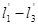
Рис. 12. Схема проверки точности установки фундаментов:
1 - анкерные
болты; 2 - проволока; l1 - l4 - расстояния от
проволоки
до анкерных болтов
Из двух полученных размеров вычисляют средний, который и принимают за фактическое расстояние между смонтированными элементами.
2.32. При монтаже сборных фундаментов с установленными анкерными болтами точность установки таких фундаментов проверяют не по граням, а по расположению анкерных болтов. Проектное положение анкерных болтов измеряют теодолитом и линейкой или проволокой, натянутой параллельно основной разбивочной оси, и линейкой (рис. 12). Аналогичным способом проверяют правильность установки анкерных болтов в монолитные фундаменты.
2.33. Вертикальность отдельно стоящей колонны проверяют теодолитом, который устанавливают в двух взаимно перпендикулярных направлениях (по цифровой и буквенной осям). Для проверки вертикальности и планового расположения (по продольной оси) ряда смонтированных колонн можно применять схему, описанную в п. 2.32 или схему, приведенную на рис. 13.
Рис. 13. Проверка вертикальности установки ряда колонн:
1 - теодолит; 2 - колонны; 3 - линейка; а1 - а4 - расстояния от грани колонн до коллимационной плоскости теодолита
Рис. 14. Проверка расстояний между осями подкрановых балок (рельсов):
1 - линейка-консоль; 2 - отвесы; l - расстояние между осями подкрановых балок; l1 - расстояние между отвесами
2.34. Высотные отметки дна котлованов, опорных плоскостей фундаментов, консолей, опорных площадок, оголовки колонн и других опорных конструкций определяют при помощи теодолита-нивелира (или нивелира) и рейки. При нивелировании подошвы фундамента рейку устанавливают в 4-5 точках (по углам и в центре контура), а при нивелировании опорной площадки фундамента для металлических колонн - по четырем углам и в основании анкерных болтов, для железобетонных - на днище стакана.
2.35. Нивелирование подкрановых балок и рельсов целесообразно выполнять при помощи гидростатического уровня.
Параллельность и расстояние между подкрановыми балками и рельсами следует проверить методом непосредственных линейных измерений.
В отдельных случаях расстояние между подкрановыми путями измеряют при помощи отвесов. Для этой цели перпендикулярно направлению осей пути прикрепляют линейки в виде консолей, к концам которых подвешивают грузы (рис. 14). Расстояние между осями подкрановых рельсов определяют по следующей математической зависимости:
l = l1 + a1 + a2, (15)
где l - расстояние между осями рельсов;
l1 - расстояние между отвесами;
a1, a2 - отсчеты по линейкам.
2.36. Расстояния между смонтированными балками, ригелями и фермами покрытий измеряют металлическими рулетками, а их вертикальность - отвесом. Расстояния между опорными узлами двух соседних элементов (конструкций) на каждой из опор измеряют прямым и обратным замерами (рис. 15).
Рис. 15. Схема замеров расстояний между смонтированными балками (фермами):
l1 - l3 - расстояния между крайними осевыми гранями, измеренные прямым ходом; - расстояния между колоннами, измеренные обратным ходом
2.37. Схемы замеров величин зазоров между смонтированными элементами и размеров площадок опирания составляют для каждого конструктивного узла на основании измерений, выполненных при помощи щупов, штангенциркулей и других шкальных инструментов.
2.38. Результаты измерений габаритных размеров элементов, а также их планового и высотного расположения в сооружении заносят в ведомости и исполнительно-монтажные схемы.
3. ОБЕСПЕЧЕНИЕ ТОЧНОСТИ ПРОКЛАДКИ ТЕХНОЛОГИЧЕСКИХ ТРУБОПРОВОДОВ
3.1. Специфической особенностью строящихся наземных объектов газовой промышленности является наличие большого объема работ по монтажу трубопроводов.
Изготовление и монтаж технологических трубопроводов должны осуществляться в соответствии с требованиями главы СНиП III-Г.9-62 "Технологические трубопроводы. Правила производства и приемки работ".
3.2. При изготовлении трубопроводов необходим пооперационный контроль точности процессов сварки и сборки узлов. Отклонения габаритных размеров узлов трубопроводов от проектных не должны превышать: при габаритном размере узла до 3 м - ± 5 мм;
на каждый последующий метр увеличения габаритного размера дополнительно - ± 2 мм; общее отклонение не должно превышать ± 15 мм.
Необходимая точность изготовления узлов и секций трубопроводов на заводах достигается за счет внедрения технологических мероприятий, проводимых в соответствии со специальными техническими условиями.
3.3. При проектировании монтажных работ трубопроводов укрупненными блоками и узлами на сборочно-монтажной схеме пунктиром должны быть выделены участки линий, которые следует рассматривать как компенсирующие. Такие участки должны быть поставлены на строительную площадку в виде прямых отрезков труб немерной длины.
Необходимость выделения компенсирующих участков обуславливается имеющимися производственными отклонениями как при изготовлении блоков, так и монтаже строительных конструкций и установке оборудования.
3.4. Конфигурацию укрупненных блоков и узлов при проектировании следует выбирать с учетом возможности компенсации производственных погрешностей по трем осям так, чтобы каждый узел был присоединен к ранее установленным трубопроводам и оборудованию не более, чем двумя стыками. Габаритные размеры блоков необходимо назначать с учетом их транспортабельности и удобства монтажа, предельным размером блоков внутрицеховых трубопроводов является 2´1,5´6 м.
3.5. Перед монтажом трубопроводов осуществляют разбивку трассы при помощи нивелира, уровней (простых или гидростатических), стальной проволоки, отвесов и стальных рулеток.
Трассировку трубопровода выполняют по рабочим чертежам, на которых должна быть указана привязка осей трубопроводов к перекрытиям, колоннам, стенам или осям здания.
Для удобства разметки элементов трассы используют передвижные подмости или лестницы-стремянки. Порядок разбивки трассы трубопроводов принимают следующий.
При помощи нивелира и рейки (или рулетки) от нулевой отметки на строительные конструкции переносят проектные отметки осей трубопровода для двух крайних точек участка.
Между отмеченными точками натягивают стальную проволоку или шнур и отмечают промежуточные точки. При использовании проволоки или шнура для разбивки трассы необходимо учитывать их прогиб от веса. Для уменьшения прогиба используют грузы или натягивают приспособления. Рекомендуется начинать разбивку трассовой оси главной магистрали трубопровода, а затем разбивать оси ответвлений.
После разбивки главных осей и ответвлений масляной краской размечают места, где должны быть установлены опоры и подвески.
3.6. Опорные конструкции трубопроводов должны быть установлены с соблюдением требуемой по проекту точности, прокладки трассы и стабильности ее положения как в период монтажа, так и эксплуатации объекта.
Несущие конструкции трубопроводов (опоры, кронштейны, подвески) должны плотно прилегать к строительным конструкциям, а допустимые отклонения опор от проектного положения определены при проектировании и не превышать для внутрицеховых трубопроводов: в плане ± 10 мм, по высоте ± 10 мм, по уклону - 0,001.
3.7. Точность монтажа технологических трубопроводов находится в прямой зависимости от точности монтажа строительных конструкций, к которым крепят опоры трубопроводов.
В зависимости от типа применяемых несущих конструкций трубопроводов его прокладка может быть независимой, полунезависимой и зависимой от точности монтажа строительных конструкций (рисунки 16-18).
Рис. 16. Схема независимой прокладки:
а - опорные конструкции трубопровода на фундаментах, не зависящих от расположения конструкции каркаса; б - кронштейны, имеющие в полке и стойке овальные отверстия для перемещения крепежных болтов; в - подвески горизонтально расположенных трубопроводов с регулируемыми тягами; г - пружинная подвеска
3.8. Производственные погрешности изготовления и монтажа строительных конструкций и технологических трубопроводов оказывают существенное влияние как на трудоемкость монтажно-сборочных операций, так и на качество сварных соединений. Непровар корня шва и другие дефекты сварки возникают в основном из-за несоблюдения допусков на смещение кромок и неравномерность зазоров стыкуемых трубопроводов (величины допусков указаны в табл.4).
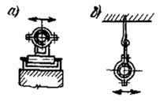
Рис. 17. Полунезависимая прокладка:
а - скользящие и катковые опоры; б - подвески горизонтально расположенных трубопроводов без регулируемых тяг
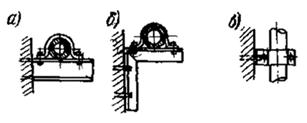
Рис. 18. Зависимая прокладка:
а - консоли горизонтально расположенных трубопроводов; б - кронштейн горизонтально расположенных трубопроводов; в - направляющие хомуты для вертикальных трубопроводов
Таблица 4
Допустимые смещения кромок и неравномерности зазора при сварке стальных трубопроводов
|
Номинальная толщина стенки трубы, мм |
||||||||
|
2,5-3 |
3,5 |
4-4,5 |
5 |
6 |
7-8 |
9-14 |
15 и более |
|
|
Допустимые смещения кромок по СНиП III-Г.9-62, мм |
0,5 |
1,0 |
1,0 |
1,5 |
1,5 |
20 |
2,5 |
3,0 |
|
Допустимая неравномерность зазора по МН 2892-62, мм |
1,0 |
1,0 |
2,0 |
2,0 |
3,0 |
3,0 |
3,0 |
3,0 |
Устранять недопустимые отклонения в стыках свариваемых трубопроводов следует за счет внедрения на заводах-изготовителях и в мастерских механической резки трубопроводов, разделки на специальных станках кромок, калибровки концов труб после их резки на патрубки (длина указана в проекте).
Подгоночные операции, проводимые на строительной площадке, включают местный нагрев концов труб или деталей газовыми горелками с зачисткой шлифовальными машинками или вручную. В случае необходимости выполняют сварку колец, причем расстояние между сварными швами должно быть не менее: 100 мм при условии диаметра трубопровода до 150 мм и 200 мм - при большем диаметре. Сварные стыки трубопроводов должны быть расположены не ближе 50 мм от опор.
Устранение зазоров между торцами труб, нахлеcтов или несовпадения осей труб путем нагрева, натяжения или искривления осей трубопроводов категорически запрещается.
4. РАСЧЕТ ЭКОНОМИЧЕСКОЙ ЭФФЕКТИВНОСТИ МЕРОПРИЯТИЙ, ПОВЫШАЮЩИХ ТОЧНОСТЬ СТРОИТЕЛЬСТВА
4.1. Вопрос о внедрении в производство конструктивно-технологических мероприятий, повышающих точность строительства, решается на основании расчета их экономической эффективности.
4.2. Основными показателями, которыми характеризуют эффективность мероприятий, повышающих точность изготовления и монтажа сборных строительных конструкций ("Типовая методика" [6] и инструкции СН-248-63 [7]), являются следующие:
сокращение продолжительности строительно-монтажных работ;
снижение себестоимости работ;
сокращение капитальных затрат.
4.3. Величины показателей эффективности определяют путем сравнения приведенных затрат эталона с предлагаемым вариантом.
В качестве эталона можно использовать фактические показатели строительства на предыдущий период.
4.4. При внедрении комплекса мероприятий сначала определяют эффективность каждого мероприятия в отдельности на единицу того вида работ, при выполнении которого намечено повысить точность. Эффективность всего комплекса определяется как сумма результатов от внедрения каждого отдельного мероприятия на различных этапах строительства.
4.5. Суммарный экономический эффект от внедрения комплекса мероприятий, повышающих точность строительства, рассчитывают в соответствии с основными требованиями [2-3] и по формуле
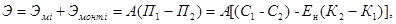
где Эмi - экономия от внедрения новой техники и технологии при изготовлении сборных строительных конструкций, руб.;
Эмонт.i - экономия от внедрения новой техники и технологии при монтаже сборных строительных конструкций, руб.;
А - годовой объем внедрения (в натуральном или денежном выражении);
П1 - приведенные затраты по эталону, руб.;
П2 - приведенные затраты по новому варианту, руб.;
С1 - себестоимость продукции по эталону, руб.;
С2 - себестоимость продукции по новому варианту, руб.;
Ен - нормативный коэффициент эффективности;
К1 - капитальные затраты по эталону, руб.;
К2 - капитальные затраты по новому варианту, руб.
(17)
где Энi - экономия от сокращения условно-постоянной части накладных расходов, руб.;
Этр.i - экономия накладных расходов от снижения трудоемкости работ, руб.;
Эзар.i - экономия накладных расходов при сокращении затрат на основную заработную плату рабочих, руб.;
Эмат.i - экономия по расходу средств на вспомогательные строительные материалы, руб.;
Эиi - экономия от внедрения новой техники и технологии при изготовлении сборных строительных конструкций, руб.;
Эмонт.i - экономия от внедрения новой техники и технологии при монтаже сборных строительных конструкций, руб.
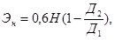
где 0,6 - коэффициент, учитывающий долю условно постоянной части накладных расходов, руб.;
Н - нормативная величина накладных расходов, руб.;
Д1 - продолжительность работ по эталону, чел.-дни (год);
Д2 - продолжительность работ по новому варианту, чел.-дни (год).
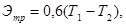
где 0,6 - сумма накладных расходов, приходящаяся на 1 чел.-день, руб.;
Т1, Т2 - трудоемкость работ соответственно по эталону и новому варианту, чел.-дни.
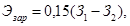
где 0,15 - коэффициент, учитывающий сокращение накладных расходов при снижении фонда основной заработной платы рабочих, руб.;
З1 - сумма заработной платы рабочих по эталону, руб.;
З2 - сумма заработной платы рабочих по новому варианту, руб.
4.6. Повышение точности строительства может привести к увеличению затрат по отдельным показателям при сравнении с эталоном, поэтому при подсчете суммарного экономического эффекта соответствующие показатели в правой части формулы (16) приняты со знаком минус.
Если нет разницы в показателях сравниваемых вариантов, эти показатели в формулу не вводят и расчет ведут методом "на разность".
4.7. В отдельных случаях (например, при определении эффективности применения взаимозаменяемых конструкций) расчет можно вести, исходя из себестоимости единицы заводской или условно конечной продукции (смонтированных конструкций и частей зданий) в зависимости от области применения новой конструкции. Если применение конструкции с повышенной точностью изготовления и монтажа вызывает изменение производственных показателей и смежных элементов, то при сравнении вариантов и суммарной оценки эффективности необходимо включать себестоимость этих конструктивных элементов.
Пример расчета экономической эффективности от повышения точности строительства приведен в приложении 4.
Приложение 1
ИЗГОТОВИТЕЛЬНЫЕ ДОПУСКИ ЛИНЕЙНЫХ РАЗМЕРОВ И УСЛОВИЯ, НЕОБХОДИМЫЕ ДЛЯ ИХ ОБЕСПЕЧЕНИЯ В ПРОЦЕССЕ ИЗГОТОВЛЕНИЯ
Таблица 5
Изготовительные допуски (Dи) линейных
размеров сборных элементов и конструкций
(СНиП 1-А.4-62)
|
Величины допусков при классах точности изготовления, мм |
||||||||
|
5-и К=160 |
6-и К=250 |
7-и К=400 |
8-и К=640 |
9-и К=1000 |
10-и К=1600 |
11-и К=2500 |
12-и К=4000 |
|
|
До 1500 |
0,9 |
1 |
2 |
4 |
6 |
10 |
14 |
22 |
|
Свыше 1500 до 2500 |
1,2 |
2 |
3 |
5 |
8 |
12 |
20 |
30 |
|
Свыше 2500 до 4500 |
1,5 |
3 |
4 |
6 |
10 |
16 |
24 |
38 |
|
Свыше 4500 до 9000 |
2,3 |
4 |
6 |
9 |
14 |
22 |
36 |
56 |
|
Свыше 9000 до 15000 |
3,4 |
5 |
9 |
14 |
22 |
34 |
54 |
86 |
|
Свыше 15000 до 21000 |
4,0 |
6 |
10 |
16 |
26 |
40 |
64 |
100 |
|
Свыше 21000 до 27000 |
4,6 |
7 |
11 |
18 |
28 |
46 |
72 |
- |
|
Свыше 27000 до 33000 |
5,0 |
8 |
13 |
20 |
32 |
50 |
- |
- |
Таблица 6
Характеристики производственных процессов изготовления сборных строительных конструкций в зависимости от класса точности (по таблице 5)
|
Характеристики производственных процессов изготовления |
|
|
Общие требования |
|
|
6-и |
Стыкуемые поверхности конструкций (базы и оголовки колонны, фермы, балки)должны быть строганные или фрезерованные. Размеры элементов и деталей между строганными и фрезерованными поверхностями должны соответствовать 6-и классу точности изготовления. Контроль точности габаритных размеров осуществляют стальными рулетками, угольниками, линейками и штангенциркулями 2 класса точности. Элементы и детали для изготовления металлических конструкций повышенной точности размечают чертилкой из твердого сплава непосредственно на металле, не применяя шаблоны. При разметке деталей перед их строжкой или фрезерованием необходимо учитывать припуски по длине на укорочение конструкции под действием усадки сварных швов и обработки торцов. Конструкции, состоящие из нескольких отправных марок, должны пройти контрольную сборку с обязательной маркировкой. |
|
Металлические конструкции |
|
|
7-и |
Заготовку элементов и деталей сборных конструкций осуществляют по наметке при помощи шаблонов. Шаблоны изготавливают по 5-и классу точности. Наметку выполняют чертилками из твердого сплава. При резке по упору наметку можно не наносить. Конструкции собирают в кондукторах, соединения осуществляют болтами. Точность габаритных размеров контролируют стальными рулетками 2 и 3 классов точности, а также стальными угольниками и линейками. |
|
8-и |
Заготовку элементов и деталей сборных конструкций выполняют по наметке. Шаблоны изготавливают по 6-и классу точности. Наметку наносят чертилкой, мелом или белилами. Конструкции собирают по копиру или на стеллажах. Соединения деталей болтовые и сварные. Контроль точности габаритных размеров осуществляют стальными рулетками 3 класса точности, стальными линейками и угольниками. (Допускается изготовлять сварные металлические конструкции, имеющие 9-и класс точности). |
|
Железобетонные конструкции |
|
|
8-и, 9-и |
Сборные железобетонные конструкции формуют в металлических формах, изготовленных по 6-и классу точности. Конструкция форм должна обеспечивать достаточную жесткость бортов и поддона. Высокой точности форм достигают за счет применения для их изготовления гнутых профилей из листового металла. Формующие поверхности баз и оголовков колонн, ферм, балок должны быть строганные или фрезерованные. Для изделий, изготовляемых по классу точности 9-и, обработка бортов форм не требуется. Изготовлять линейные изделия (балки, колонны, стойки) целесообразно в формах со съемной, переналаживаемой и частично неразъемной бортоснасткой, что позволяет строго выдерживать проектные размеры изделий. При использовании форм с откидными бортами люфты в шарнирах и замках не должны превышать 1 мм для 8-и класса точности изготовления и 9 мм для 9-и класса. Для сохранения проектной точности в готовых изделиях необходимо выполнять текущий ремонт форм в сроки, указанные в ТУ на их эксплуатацию. Распалубку конструкций осуществляют после достижения бетоном заданной прочности. |
|
10-и, 11-и |
Сборные железобетонные конструкции формуют в металлических формах, изготовленных по 8-и и 9-и классам точности. Для изготовления бортовой оснастки форм можно использовать горячекатаные профили, не прибегая при обработке формующих плоскостей к строганию или фрезерованию. Люфты в замках и шарнирах форм не должны превышать 3 мм. Распалубку изделий выполняют после предварительной выдержки. В отдельных случаях допускается удалять бортовую оснастку отдельных бортов или вкладышей сразу после формования. Контроль точности габаритных размеров осуществляют металлической рулеткой 3 класса точности, металлическим угольником и линейкой или шаблоном. |
|
12-и |
По 1-и классу точности допускается изготавливать только фундаментальные блоки. Формование блоков осуществляют в металлических неразъемных формах. Распалубку готовых изделий выполняют после незначительной выдержки или немедленно после формования. Контроль точности габаритных размеров осуществляют рулеткой или шаблоном. |
Приложение 2
РАЗБИВОЧНЫЕ (ГЕОДЕЗИЧЕСКИЕ) И МОНТАЖНЫЕ ДОПУСКИ НА НЕСОВМЕЩЕНИЕ УСТАНОВОЧНЫХ ОСЕЙ И НА НЕВЕРТИКАЛЬНОСТЬ ЭЛЕМЕНТОВ КОНСТРУКЦИЙ
Таблица 7
Допуск осевых разбивочных размеров (Dрo) и способы производства разбивочных работ в зависимости от класса точности
|
Класс точности |
Dрo, мм |
Способы производства работ |
|
|
До 9000 |
1-р |
2 |
Разбивку осей осуществляют теодолитом. Для измерения расстояний используют стальную компарированную рулетку длиной 20 м с ценой деления 1 мм. Усилие натяжения рулетки должно быть 10±0,5 кГ и проверяться динамометром. Линии измеряют по спланированной поверхности. Если измеряемая линия имеет уклон, необходимо вводить поправки на превышение отметок станций. Поправки вводят также на температурное расширение мерной ленты и на компарирование. Перенесение вертикальных осей осуществляют теодолитом или оптическими центрировочными приборами (ОПП-2, РZL) от опорных точек, нанесенных на фундаменты. Положение осей закрепляют рисками, прочерчиваемыми на специальных металлических марках. |
|
От 9000 до 15000 |
-"- |
3 |
|
|
От 15000 до 21000 |
-"- |
4 |
|
|
От 21000 до 27000 |
-"- |
4 |
|
|
От 27000 до 33000 |
-"- |
5 |
|
|
Свыше 33000 |
-"- |
4 |
|
|
До 9000 |
2-р |
5 |
Разбивку осей осуществляют теодолитом. Для измерения расстояний используют стальную компарированную рулетку длиной 20 м с ценой деления 1 мм (без контроля натяжения динамометром). Перенесение вертикальных осей осуществляют теодолитом или тяжелым отвесом. Положение разбивочных осей закрепляют рисками, нанесенными на поверхность конструкций металлической чертилкой из твердого сплава или краской при помощи трафаретов. Вне контура сооружения положение разбивочных осей закрепляют на обноске. При правильно построенной обноске достигают точность разбивки с предельной относительной ошибкой 1:4000. |
|
От 9000 до 15000 |
-"- |
6 |
|
|
От 15000 до 21000 |
-"- |
7 |
|
|
От 21000 до 27000 |
-"- |
8 |
|
|
От 27000 до 33000 |
-"- |
9 |
|
|
Свыше 33000 |
-"- |
8 |
|
|
До 9000 |
3-р |
6 |
Разбивку осей осуществляют теодолитом. Для измерения расстояний используют некомпарированную рулетку с ценой деления 1 мм. Отклонения от горизонтальности трассы можно проверять визуально по вешкам. Перенесение вертикальных осей выполняют отвесом. Положение разбивочных осей наносят краской на поверхности конструкций. |
|
От 9000 до 15000 |
-"- |
8 |
|
|
от 15000 до 21000 |
-"- |
10 |
|
|
от 21000 до 27000 |
-"- |
12 |
|
|
от 27000 до 33000 |
-"- |
14 |
|
|
свыше 33000 |
-"- |
11 |
Примечание: n - количество промеров 20-метровой лентой.
Таблица 8
Допуск на отклонения отметок уровенных маяков (Dру) и способы производства разбивочных работ в зависимости от класса точности
|
Класс точности |
Dру, мм |
Способы производства работ |
|
|
Разность высотных отметок установленных маяков: |
Вертикальные отметки переносят при помощи нивелира и рейки или стальной компарированной рулетки с ценой деления 1 мм непосредственно с реперов, расположенных на территории строительной площадки. Нивелирные ходы для высотной разбивки достаточно прокладывать с точностью технического нивелирования IV класса. Положение отметок закрепляют марками или прочерчивают риски на специальных металлических пластинках. |
||
|
в пределах одной станции нивелирования; |
1-р |
6 |
|
|
для двух соседних элементов |
- - |
2 |
|
|
Разность высотных отметок установленных маяков: |
Вертикальные отметки переносят при помощи нивелира и рейки или стальной компарированной рулетки с ценой деления 1 мм, как с основных опорных точек (постоянных реперов), так и с промежуточных реперов или ранее установленных конструкций. Положение высотных отметок закрепляют рисками, нанесенными на поверхность конструкций краской при помощи трафаретов или чертилкой из твердого сплава. |
||
|
в пределах одной станции нивелирования; |
2-р |
10 |
|
|
для двух соседних элементов |
-"- |
4 |
|
|
Разность высотных отметок установленных маяков: |
|||
|
в пределах одной станции нивелирования; |
3-р |
20 |
Вертикальные отметки переносят при помощи визирок. Отметки неподвижных визирок устанавливают нивелиром. В качестве опорной отметки может быть принят уровень ранее установленных конструкций. Положение высотных отметок закрепляют рисками, нанесенными на конструкции краской. Высотные отметки в грунте дна котлованов закрепляют путем забивки деревянных колышков, верхний срез которых определяет высотную отметку. |
|
для двух соседних элементов |
-"- |
10 |
Таблица 9
Допуск на несовмещение осей элементов с осями при разбивке на монтажном горизонте (Dуо), методы монтажа и способы выполнения монтажных операций в зависимости от класса точности
|
Класс точности |
Dуо, мм |
Методы монтажа и способы выполнения монтажных операций |
||
|
группа |
эскиз |
|||
|
1-А |
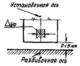 |
1-у |
2 |
Методы установки сборных конструкций: а) метод ограниченно свободного монтажа применяется в тех случаях, когда конструкции имеют устройства для фиксации взаимного расположения сопрягаемых элементов (фиксаторы, вилочные захваты, монтажные болты, упоры); б) метод полупринудительного монтажа применяется в тех случаях, когда свобода движения элемента на стадии его монтажа ограничена кондукторами, манипуляторами, шаблонами; |
|
1-Б |
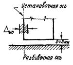 |
1-у |
2 |
в) методом принудительного монтажа с использованием трафаретов и жестких захватов с дистанционным управлением монтажными средствами можно пользоваться во всех случаях монтажа, когда сопрягаемые поверхности металлических центрирующих прокладок обрабатывают строганием или фрезерованием, а сопрягаемые бетонные поверхности приторцовывают. |
|
П-А |
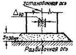 |
1-у |
4 |
При монтаже конструкций методом ограниченно свободного монтажа установленный допуск определяют точностью изготовления фиксаторов, захватов и т.д. При полупринудительном монтаже выверку устанавливаемых конструкций осуществляют установочными винтами или домкратами кондукторов и манипуляторов до полного совмещения осей элементов с разбивочными осями. |
|
П-Б |
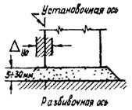 |
Положение разбивочных и установочных осей закрепляют рисками, прочерчиваемыми на специальных металлических марках. Если за установочную ось элемента принимают его грань, необходимо вводить поправку на неточность изготовления элемента. |
||
|
Ш |
|
1-у |
10 |
Точность установки элементов при III группе сопряжений проверяют путем измерения площадок опирания металлическими линейками с ценой деления 1 мм. Размеры зазоров и толщину швов контролируют калибром-щупом. |
|
1-А |
Эскизы для всех случаев |
8 |
Методы установки сборных конструкций: а) методом свободного монтажа без применения оснастки, но с использованием ручного инструмента (монтажные ломики, клинья, оттяжки); б) методом ограниченно свободного монтажа с применением оснастки, не имеющей регулировочных винтов для тонкой регулировки конструкций и кондуктора. Положение разбивочных и установочных осей закрепляют краской на поверхности конструкций. При монтаже многоярусных колонн ограниченно свободным методом установку кондукторов (одиночных) выполняют по установочным осям нижней колонны. |
|
|
1-Б |
2-у |
10 |
||
|
П-А |
10 |
|||
|
П-Б |
12 |
|||
|
Ш |
30 |
|||
Таблица 10
Допуск на невертикальность установки элементов сборных конструкций (Dув), методы монтажа и выверки в зависимости от класса точности
|
Класс точности |
(Dув), мм |
Методы монтажа и выверки |
|
|
До 4500 |
1-у |
10 |
Монтаж сборных конструкций ведут ограниченно свободным, полупринудительным и принудительным методами; устанавливаемые конструкции выверяют винтами и домкратами кондукторов и манипуляторов, а также регулировкой жестких и гибких связей временного крепления. Контроль вертикальности конструкций выполняют в двух взаимно перпендикулярных плоскостях теодолитом, отвесом, рейкой маятниковым отвесом системы Чернышева или измерителем с уровнем. |
|
Свыше 4500 До 15000 |
-"- |
20 |
|
|
Свыше 15000 |
35 |
||
|
До 4500 |
2-у |
20 |
Монтаж сборных конструкций ведут свободным и ограниченно свободным методами монтажа. Устанавливаемые конструкции выверяют оттяжками с форкопфами или расчалками. Контроль вертикальности конструкций выполняют тяжелым отвесом или теодолитом. |
|
Свыше 4500 До 15000 |
-"- |
30 |
|
|
Свыше 15000 |
-"- |
Приложение 3
ПРИМЕРЫ РАСЧЕТА КОНСТРУКЦИЙ НА ТОЧНОСТЬ
ПРИМЕР 1. Определить предельные размеры зазора между колонной и балкой в свободной цепи элементов сборных конструкций железобетонного каркаса здания (рис. 19), а также проверить выполнение условия взаимозаменяемости при 9-и, 10-и и 11-и классах точности изготовления конструкций.
Рис. 19. Схема расчетного участка:
Dик - допуск на изготовление колонны; Dиб - допуск на изготовление балки; Dув - допуск невертикальности установки колонны; Dуо - допуск на установку оси; Dро - допуск разбивки оси; с - размер зазора
Исходные данные
Проектный размер между осями колонн 6000 мм.
Поперечное сечение колонн 400´400 мм.
Высота консолей колонн 4500 мм.
Проектная величина зазора 25 мм.
Решение
Проектом для данного случая установлены следующие классы точности:
класс точности разбивки - 3-р;
класс точности установки колонн по горизонтальным осям - 2-у;
класс точности установки колонн по вертикали - 2-у.
Частный вид основной расчетной формулы (3) для данного случая имеет вид:
По таблицам 5-10 приложений 1 и 2 определяют величины элементарных допусков:
Dро = 6 мм (табл. 7 приложения 2 для 3-р класса точности разбивки в интервале до 9000 мм);
Dуо = 10 мм (табл. 7 приложения 2 для 2-у класса точности установки, группа сопряжения № 1);
Dув = 20 мм (табл. 10 приложения 2 для 2-у класса точности установки при высоте элемента конструкции до 4500 мм).
По табл. 5 приложения 1 для данного примера составлена табл.11.
Таблица 11
Допуск изготовления конструкции в зависимости от класса точности
|
Допуск изготовления колонны Dик, мм |
Допуск изготовления балки Dиб, мм |
|
|
9-и |
6 |
14 |
|
10-и |
10 |
22 |
|
11-и |
14 |
36 |
Для 9-и класса точности изготовления конструкций по формуле (21) определяют допуск зазора (Dсз)
По формуле (6) определяют предельные размеры зазора:
Для 10-и класса точности изготовления конструкций по формуле (21) определяют допуск зазора (Dсз)
и по формуле (6)
Для 11-и класса точности изготовления конструкций по формуле (21) определяют допуск зазора (Dсз)
и по формуле (6)
Таким образом, предельно допустимым классом точности изготовления конструкций, при котором удовлетворяются условия взаимозаменяемости, является 10-и класс. Если точность изготовления конструкций будет ниже 10-и класса, то предельный минимальный зазор будет равен 0 или иметь отрицательное значение, в последнем случае необходимы подгоночные работы.
ПРИМЕР 2. Определить основные конструктивные допуски и размеры сопряжений для каркаса компрессорного цеха (рис. 20).
Исходные данные
Пролет - 15000 мм.
Высота колонн - 14400 мм.
Сечение колони - 400´500 мм.
Изготовление колонн и ферм производится по 9-и классу точности.
Допуски на разбивку осей по 3-р классу точности.
Допуски на установку элементов по 2-у классу точности.
Для назначения допусков пользуемся таблицами 5-10 приложений 1 и 2.
Решение
Суммарный допуск погрешностей определяется по формуле (21)
Рис. 20. Схема расчетного участка цепи погрешностей:
Dил - допуск на изготовление фермы; Dуо - допуск на установку оси; Dув - допуск невертикальности установки колонны; Dрэ - допуск нанесения риски; Dро - допуск разбивки оси колонн
где Dро = 6 мм (по табл. 7 приложения 2);
Dуо = 10 мм ( по табл. 9 приложения 2);
Dрэ = 6 мм (по табл. 7 приложения 2);
Dув =30 мм (по табл. 10 приложения 2);
Dил = 22 мм (по табл. 5 и 6 приложения 1);
Dуб = 30 мм (по табл. 3 и п. 2.24).
Определяем проектный размер зазора между болтами колонны и отверстиями в ферме (рис. 21).
Рис. 21. Схема сопряжения ферм с колонной:
1 - анкера
колонны диаметром 22 мм; 2 - назначенный диаметр вилки;
3 - требуемый диаметр вилки
Диаметр анкерных болтов d, установленных в оголовке колонны, равен 22 мм.
Примем минимально допустимую величину отверстия в ферме равную 25 мм.
Суммарная неточность погашается двумя зазорами (на каждом из оголовков колонн), отсюда проектный зазор С0 находим по формуле (6)
b = 0.
Поправку на несимметричность отклонений (b) принимаем равной 0.
В рассмотренном примере распределение точности между процессами следующее:
точность установки ду = = 100% = 82%,
точность изготовления ди = = 100% = 13,1%;
точность разбивки др = = 100% = 4,9%.
ПРИМЕР 3. Расчет точности элементов каркаса компрессорного цеха в продольном направлении (рис. 22, 23).
Рис. 22. Схема размерной цепи подкрановых балок и колонн
Рассмотрим возможное отклонение от вертикали колонн одного продольного ряда при монтаже подкрановых балок контактным методом.
Исходные данные
Шаг колонн - 6000 мм.
Длина цеха - 126 м.
Расстояние от основания до верха консоли колонны - 11500 мм.
Изготовление колонн по 9-и классу точности, подкрановых балок по 7-и классу точности.
Допуск на разбивку осей по 3-р классу точности.
Допуск на установку элементов по 2-у классу точности.
Рис. 23. Схема расчетного участка цепи погрешностей:
Dрэ - допуск
нанесения риски; Dув - допуск
невертикальности установки; Dик - допуск изготовления колонны; Dиб - допуск
изготовления балки, Dуо - допуск
установки оси;
Dро - допуск на
разбивку оси
Для назначения допусков пользуемся табл. 5-10 приложений 1 и 2.
Монтаж подкрановых балок выполнен контактным способом.
Решение
Суммарный допуск погрешностей с учетом допуска на осевую разбивку оснований колонн определяют из следующего выражения:
где Dро = 5 мм (по табл. 7 приложения 2);
Dуо = 8 мм (no табл. 9 приложения 2);
Dрэ = 5 мм (по табл. 7 приложения 2);
Dув = 30 мм (по табл. 10 приложения 2);
Dиб = 6 мм (по табл. 5 и 6 приложения 1);
Dуб = 30 мм (по табл. 9 приложения 2).
n - количество промеров 20-метровой лентой; при длине цеха 126 м n = 6;
Таким образом, отклонение верха крайней колонны от вертикальной оси составит 81 мм.
Приложение 4
ПРИМЕР РАСЧЕТА ЭКОНОМИЧЕСКОЙ ЭФФЕКТИВНОСТИ ОТ ПОВЫШЕНИЯ ТОЧНОСТИ СТРОИТЕЛЬСТВА
Строительно-монтажная организация планирует повысить точность строительства за счет упразднения операции выверки после монтажа сборных металлических конструкций каркаса цеха газовых турбин компрессорной станции.
Для осуществления этого метода предусмотрено применить металлические колонны с фрезерованными торцами и опорными плитами. Опорные плиты башмаков, отделенные от колонн, установлены отдельно.
Исходные данные
Размер цеха в плане 127´15 м, основные металлоконструкции приведены в табл.12.
Таблица 12
Объем монтируемых конструкций
|
Количество единиц на весь объем, () |
|
|
Металлические колонны весом 3,3 т |
46 151,8 |
|
Металлические распорки весом 0,202 т |
21 4,242 |
|
Металлические связи весом 0,300 т |
21 6,363 |
|
Металлические подкрановые балки весом 0,67 т |
42 28,14 |
|
Металлические фермы покрытия весом 1,4 т со связями |
21 72,87 |
Общий вес конструкций составляет 263,415 т.
Сметная стоимость монтажа конструкций каркаса 74150 руб.
В качестве эталона приняты технико-экономические показатели, полученные за предыдущий период.
Суммарная фактическая трудоемкость монтажа конструкций каркаса для эталона принята по данным хронометражных наблюдений.
Точность монтажа колонн оказывает существенное влияние на трудоемкость монтажа подкрановых балок, ферм покрытий, связей, поэтому в расчет экономической эффективности эти конструкции включены.
Трудоемкость монтажа и суммы основной заработной платы для варианта безвыверочного монтажа конструкций рассчитаны по ЕНиР § 5-1.
Стоимость металлических конструкций франко-приобъектного склада принята по ценнику № I (ч.П, п.31). При применении колонн с фрезерованными поверхностями торцов цены на них приняты с надбавкой в размере 5% оптовой цены за вычетом стоимости основных материалов и провозной платы в размере 9,4 руб. за 1 т (ценник № I, ч.П, примечание 5).
Монтаж конструкции каркаса выполнен краном В-1258, стоимость машино-смены которого См.-см =21-81 руб.
Бригада монтажников состоит из 7 человек.
Экономическая эффективность рассчитана методом „на разность".
Решение
В таблице 13 приводится сравнение вариантов.
Таблица 13
Таблица сравнения вариантов
|
Единица измерения |
Эталон |
Вариант безвыверочного метода монтажа |
|
|
Себестоимость материалов |
руб. |
57298 |
57783 |
|
Основная заработная плата рабочих |
руб. |
3489-57 |
3288-3 |
|
Суммарная трудоемкость |
чел.-дни |
1080 |
834 |
|
Машины (кран В-1258) |
руб. |
381-68 |
294-44 |
|
Условно-постоянная часть накладных расходов Н-0,6 |
руб. |
3218-10 |
3218-10 |
Экономия от сокращения условно-постоянной части накладных расходов составит:
экономия накладных расходов от снижения трудоемкости работ
экономия накладных расходов при сокращении затрат на основную заработную плату рабочих
экономия затрат на эксплуатацию монтажного крана при сокращении трудоемкости монтажа
Дополнительные расходы на материалы, имеющие более высокую точность изготовления
Суммарный экономический эффект от повышения точности строительства за счет перехода на безвыверочный монтаж конструкций подсчитывают по формуле
= 743,73 + 147,6 + 30,2 + 87,24 - 485 = 523,77 руб.
Таким образом, расчет показал, что по стоимости сравниваемые варианты практически эквивалентны. Однако, учитывая повышение производительности труда рабочих-монтажников на 22,8%, целесообразно принять новый метод монтажа.
ЛИТЕРАТУРА
1. СНиП 1-А.4-62. М., Стройиздат, 1963.
2. СНиП III-А.5-62, М., Стройиздат, 1963.
3. СНиП III-Б.1-62х, М., Стройиздат, 1967.
4. СНиП III-В.3-62х, М., Стройиздат, 1968.
5. СНиП III-Г.9-62х, М., Стройиздат, 1967.
8. Руководство по расчету и проектированию стальных форм. М., Стройиздат, 1970.
9. Формы стальные сварные для изготовления бетонных и железобетонных изделий (МРТУ-7-15-68). М., Стройиздат, 1966.
10. Указания по расчету точности конструкций каркасных зданий. М., ЦНИИЭП учебных зданий, 1971.
СОДЕРЖАНИЕ